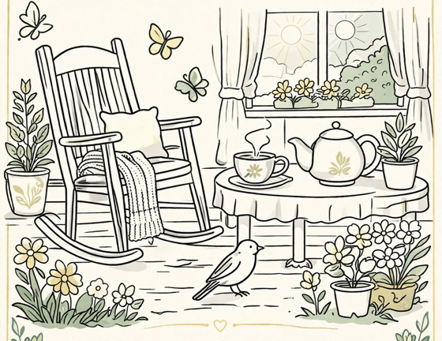
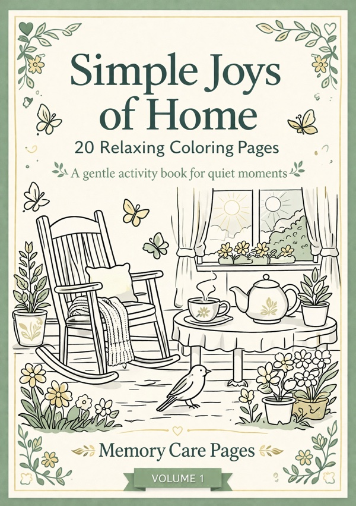

Simple Joys of Home (Volume 1)
20 relaxing coloring pages inspired by everyday moments at home. A gentle printable activity designed for calm and creativity.
$4.99
Buy Now
20 relaxing coloring pages inspired by everyday moments at home. A gentle printable activity designed for calm and creativity.

Memory Care Pages offers printable coloring books created especially for seniors living with memory loss, dementia, or Alzheimer's - and for anyone who simply loves to color and unwind.
Every page uses bold outlines and large designs that are easy to see and color - no tiny details to frustrate.
Flowers, kitchens, gardens, and animals - scenes that spark warm memories and gentle conversation.
Coloring is a proven calming activity. These pages are designed to reduce anxiety and bring moments of joy.
Each book is a downloadable PDF you can print at home or at a local copy shop - again and again.

20 relaxing coloring pages inspired by everyday moments at home. A gentle printable activity designed for calm and creativity.
Sunflowers, roses, and garden friends - cheerful botanical scenes that celebrate the beauty of the outdoors.
Cats, birds, butterflies, and gentle woodland creatures - friendly animal scenes full of warmth and personality.
These aren't ordinary coloring pages. Every detail is thoughtfully created for the needs of seniors and memory care.
Created with input from caregivers to be suitable for all stages of cognitive decline.
Big shapes and wide lines are easy to color without frustration - even with limited fine motor skills.
Standard letter-size PDF pages. Print as many times as you need on any home or office printer.
Kitchens, gardens, animals, and seasons - subjects that connect to real memories and encourage conversation.
Coloring reduces anxiety and provides a calming, purposeful activity for seniors of all abilities.
No waiting for shipping. Download immediately after purchase and start printing right away.
Each article is built around practical, search-friendly topics so the site can grow beyond a single landing page.
What caregivers and activity teams should look for when choosing printable pages for memory care use.
Read articleSimple, familiar ideas that can help create quieter, lower-pressure moments for people living with Alzheimer's.
Read articleLow-pressure ideas caregivers can use at home, from music and sorting tasks to printable coloring pages with familiar themes.
Read articleHow simple, familiar coloring pages can support calm, routine, and social connection at home or in memory care settings.
Read articleSimple Joys of Home is available now - 20 gentle pages to print and enjoy at your own pace.